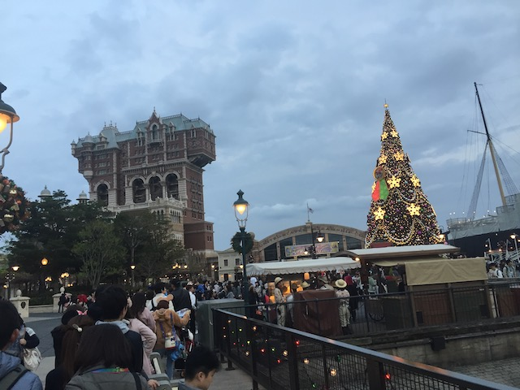
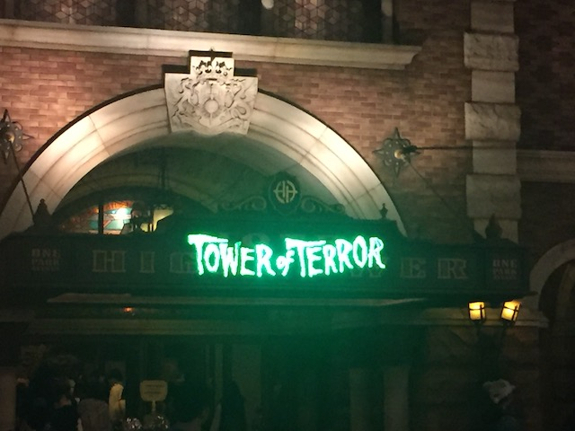
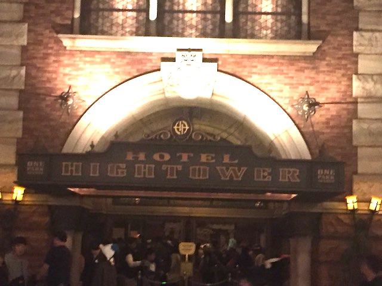
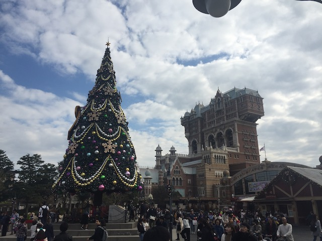
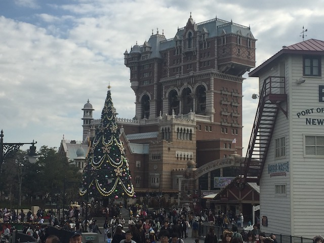
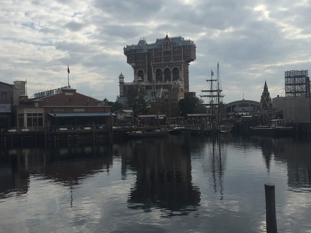

| |
Tower of Terror Review

We're here at Tokyo DisneySea where we'll reveiwing Tower of Terror. Tokyo Disney's official drop tower. When you walk up to it, the first thing you notice is that this very different looking from all the other Tower of Terrors. This one....kind of looks like its in New York City. Well, that makes sense considering that this Tower of Terror is in the American Waterfront port. But it's not just different on the outside. It's also different inside too. Let's just get this out of the way. This Tower of Terror has NOTHING to do with the Twilight Zone. Nor does it have anything to do with Guardians of the Galaxy or any Marvel Property. Because Japan isn't familiar with the Twilight Zone (Highly recommend it), it has its own custom story. The story of this ride is that Harrison Hightower is a wealthy asshole who inherits a mansion from his dad. Being a savy businessman, he rennovates the place and turns it into a fancy hotel. However, when he goes on a safari in Africa, he comes across an uncontacted tribe, who idolizes a god named Shikiri. Wanting it all for himself, he takes Shikiri back to his hotel in NYC. But when he gets back, Mr. Hightower dissapears and everyone assumes that Shikiri is responsible, and that the hotel is now haunted. We then get in line and go into the hotel lobby. The hotel lobby looks very well done and has a spooky theme to it. Then a cast member will assign you into the library. There, you will see the backstory of how Shikiri haunts the hotel (I LOVE SHIKIRI!!! Though not quite as much as Chandu). Then you go into the next room, where Mr. Harrison's famous artifacts are. Very nice. About 5 to 10 minutes later, you're standing in front of the elevator doors, waiting to board. Then when the doors open, you board. Once you fasten, your seatbelt (This one has the shoulder belts found in cars. Awkward, but whatever), the elevator moves back to the shaft, before going up to the next level. Then when it stops, you see Mr. Hightower being obliterated and sent into another dimension by Shikiri. Then you raise up into the next scene, where you see the mirror effect. It goes as planned, except Shikiri makes us all dissapear. He then speaks to us in Japansese, then the dropping begins. You rise up a couple times, space shot style. Then it rises up to the top of the tower, where you get a great view of Tokyo DisneySea *drool*. Then you drop a level, still in a window, but then you drop back down, then you have all sorts of drops that give you various bits of airtime. Now while the story is easily the best of the Tower of Terrors, this actually has the weakest airtime. Which is a bummer. Then at the end, you go up to the window one more time, and then you drop back down to the bottom. As you are welcomed back, you come back to the door exit back into Tokyo DisneySea. Now, I will admit that Florida Tower of Terror is still my favorite Tower of Terror thanks to its amazing drop program and still a really good story, Japansese Tower is is still a very fun ride that I would highly recommend riding it if you go to Tokyo DisneySea.
9/10
Location: Tokyo DisneySea
Opened: 2007
Built by: Disney
Last Ridden: November 13, 2018
Tower of Terror Photos








Home
|